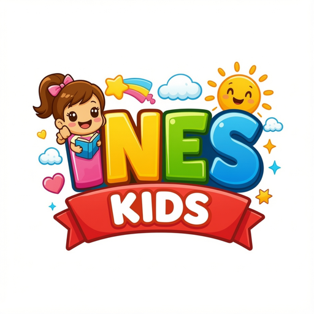

Dernière mise à jour : 3 juillet 2026
Ines Kids est une application destinée aux enfants. La protection de la vie privée des familles est notre priorité absolue. Cette politique explique nos pratiques, conformes à la politique « Familles » de Google Play et aux réglementations sur la protection des enfants.
Ines Kids ne demande aucun compte, aucun identifiant, aucune adresse e-mail à l'enfant. Nous ne collectons, ne stockons ni ne transmettons aucune donnée personnelle vers un serveur.
Seules ces informations sont enregistrées sur l'appareil (stockage local), jamais sur un serveur :
Ces données restent sur l'appareil et disparaissent si l'application est désinstallée.
Le parcours enfant est sans publicité et sans traceur. Aucune donnée n'est utilisée à des fins publicitaires ou de profilage. Si une future version propose des publicités récompensées optionnelles, elles seront activables uniquement par le parent, non personnalisées et adaptées aux familles.
Les réglages (langue, niveau, activités, sauvegarde) sont protégés par un code dans l'espace parent, hors de portée de l'enfant.
Une sauvegarde de la progression peut être activée par le parent via un « code famille » anonyme (aucune donnée personnelle). Elle est désactivée par défaut.
Désinstaller l'application ou effacer ses données supprime immédiatement toute la progression stockée localement.
Pour toute question : atlasquest369@gmail.com — chaîne YouTube : @ineskids
Last updated: July 3, 2026
Ines Kids is an app for children. Protecting family privacy is our top priority. This policy describes our practices, compliant with Google Play's Families policy and child-protection regulations.
Ines Kids requires no account, no identifier, and no email from the child. We do not collect, store, or transmit any personal data to a server.
Only this information is saved on the device (local storage), never on a server:
This data stays on the device and is removed if the app is uninstalled.
The child experience is ad-free with no trackers. No data is used for advertising or profiling. If a future version offers optional rewarded ads, they will be enabled by the parent only, non-personalized, and family-appropriate.
Settings (language, level, activities, backup) are protected by a code in the parent area, out of the child's reach.
The parent may enable a progress backup via an anonymous "family code" (no personal data). It is off by default.
Uninstalling the app or clearing its data instantly deletes all locally stored progress.
For any questions: atlasquest369@gmail.com — YouTube: @ineskids
آخر تحديث: 3 يوليو 2026
Ines Kids تطبيق موجَّه للأطفال. حماية خصوصية العائلة أولويتنا القصوى. توضّح هذه السياسة ممارساتنا، المتوافقة مع سياسة «العائلات» في Google Play وأنظمة حماية الأطفال.
لا يطلب Ines Kids أي حساب أو معرِّف أو بريد إلكتروني من الطفل. لا نجمع أو نخزّن أو ننقل أي بيانات شخصية إلى خادم.
تُحفظ هذه المعلومات فقط على الجهاز (تخزين محلي)، ولا تُرسل أبداً إلى خادم:
تبقى هذه البيانات على الجهاز وتُحذف عند إزالة التطبيق.
تجربة الطفل بلا إعلانات وبلا أدوات تتبّع. لا تُستخدم أي بيانات لأغراض إعلانية أو تحليل السلوك. إذا قدّمت نسخة مستقبلية إعلانات مكافِئة اختيارية، فسيفعّلها الوالد فقط، وستكون غير مخصَّصة ومناسبة للعائلات.
الإعدادات (اللغة، المستوى، الأنشطة، النسخ الاحتياطي) محمية برمز في مساحة الوالد، بعيداً عن متناول الطفل.
يمكن للوالد تفعيل نسخ احتياطي للتقدّم عبر «رمز عائلي» مجهول (بلا بيانات شخصية). وهو معطَّل افتراضياً.
إزالة التطبيق أو مسح بياناته يحذف فوراً كل التقدّم المخزَّن محلياً.
لأي استفسار: atlasquest369@gmail.com — قناة يوتيوب: @ineskids